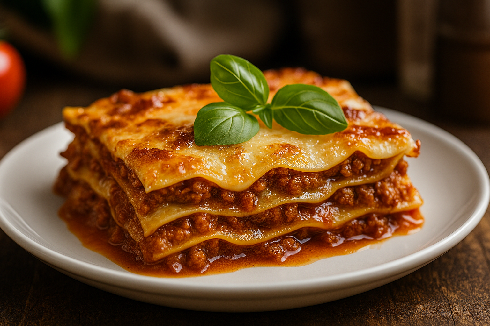

lasagna

ingredients
- Lasagna noodles
- Ground beef
- Tomato sauce
- Ricotta cheese
- Mozzarella cheese
- Parmesan cheese
- Egg
- Onion
- Garlic
- Olive oil
- Salt
- Pepper
- Italian seasoning
- Fresh basil (optional)
directions
- Cook Noodles: Boil lasagna noodles until soft. Drain and set aside.
- Make Meat Sauce: Cook ground beef with onions, garlic, and tomato sauce.
- Prepare Cheese Mixture: Mix ricotta cheese, shredded mozzarella, and a beaten egg.
- Layer: In a baking dish:
- Sauce → Noodles → Cheese → Repeat
- Top Layer: Finish with sauce and lots of cheese.
- Bake: 375°F (190°C) for 40–45 minutes.
- Rest & Serve: Let sit for 10 minutes before cutting.